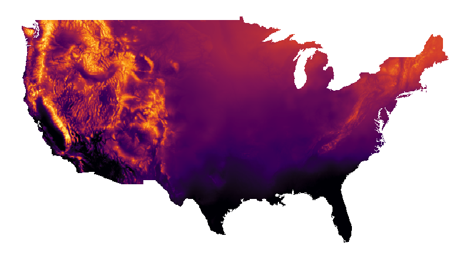

Profession
Experience
Biostatistician I (Genomics Data Analyst) - Huntsman Cancer Institute, Varley Lab (May 2021 - present)
Research Assistant - Utah State University, Department of Mathematics and Statistics, Bean Lab (Jan 2020 - May 2021)
Teaching Assistant - Utah State University, Department of Mathematics and Statistics (Aug 2019 - Dec 2019)
Research Analyst - University of Utah, Pediatric Clinical Pharmacology (Jun 2017 - Aug 2019)
Education
Graduate
MS Statistics - Utah State University (May 2021)
Thesis - "Regionalized Models with Spatially Continuous Predictions at the Borders"
Data Science Graduate Certificate - University of Utah (May 2017)
Undergraduate
BS Mathematics - Utah Valley University (May 2015)
Minor - Biology
Publications
Journal Articles
Wagstaff, J.S., Durrant, R.J., Newman, M.G., Eason, R., Ward, R.M., Sherwin, C.M.T., & Enioutina, E.Y. (2019). Antibiotic treatment of suspected and confirmed neonatal sepsis within 28 days of birth: a retrospective analysis. Frontiers in Pharmacology, 10, 1191. https://doi.org/10.3389/fphar.2019.01191
Becker, S.M., Job, K.M., Lima, K., Forbes, T.J., Wagstaff, J., Tran, N.K., Sherwin, C.M., Nelson, D.S., Johnson, M.D., & Rower, J.E. (2018). Prospective study of serum and ionized magnesium pharmacokinetics in the treatment of children with severe acute asthma. European Journal of Clinical Pharmacology, 75(1), 59-66. https://doi.org/10.1007/s00228-018-2557-7
Technical Reports
Bean, B., Maguire, M., Sun, Y., Wagstaff, J., Al-Rubaye, S.A., Wheeler, J., Jarman, S., & Rogers, M. (2021). The 2020 national snow load study (paper 276). Utah State University, Mathematics and Statistics Faculty Publications. https://doi.org/10.26077/200k-pr86
Software
Wagstaff, J. (2021). remap: regional spatial modeling with continuous borders. The Comprehensive R Archive Network (CRAN). https://github.com/jadonwagstaff/remap
Wagstaff, J. (2018). sboost: machine learning with AdaBoost on decision stumps. The Comprehensive R Archive Network (CRAN). https://github.com/jadonwagstaff/sboost
Abstracts
Wagstaff, J.S., Newman, M., & Enioutina, E.Y. (2019). Empiric treatment of neonatal early-onset sepsis: a retrospective analysis of the University of Utah Hospital cases [Abstract 43]. Clinical Pharmacology in Drug Development, 8(S1), 30. https://doi.org/10.1002/cpdd.724 (poster)
Yellepeddi, V., Wagstaff, J.S., & Constance, J.E. (2019). A physiologically-based pharacokinetic model for intravenous voriconazole in pediatric patients with and without cancer [Abstract 119]. Clinical Pharmacology in Drug Development, 8(S1), 85–86. https://doi.org/10.1002/cpdd.724
Wagstaff, J.S., Eason R., Newman M., Sherwin, C.M., & Enioutina, E.Y. (2018). Characterization and treatments of neonatal late-onset sepsis: a retrospective analysis of the Univ of Utah Hosp cases [Abstract 114]. Clinical Pharmacology in Drug Development, 7(S1), 89–90. https://doi.org/10.1002/cpdd.610 (poster)
Project Highlights
National Snow Load Study
June, 2021
Updating US building codes with new ground snow load maps. Research resulted in a new mapping technique which is implemented in the R package "remap". Maps were accepted for inclusion in ASCE 7-22. link
Neonatal Sepsis
October, 2019

An analysis of neonatal sepsis within the University of Utah Hospital system. Exploring the correlation of cefotaxime administration with increased mortality. link
Detecting Peaks in Biodiversity
April, 2017

Answering the question "Where are areas of high biodiversity?" by extending the application of a density based clustering algorithm. link
IUCN Red List by Country
December, 2016

This is a project using HTML, CSS, JavaScript, and D3 to display data in an interactive visualization. The data displayed is summary statistics by country for animals, retrieved from the IUCN Red List of Threatened Species. link